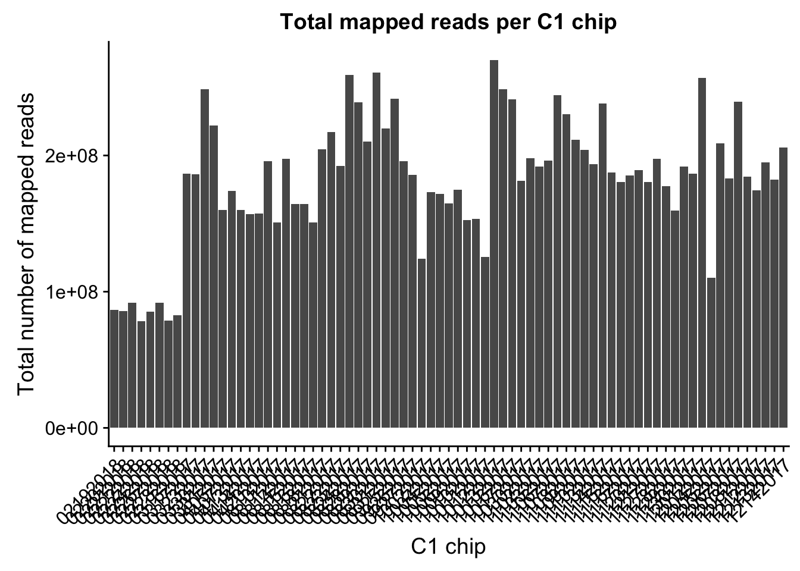
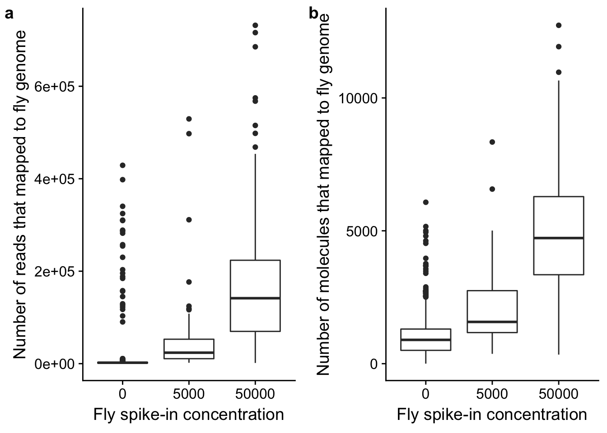
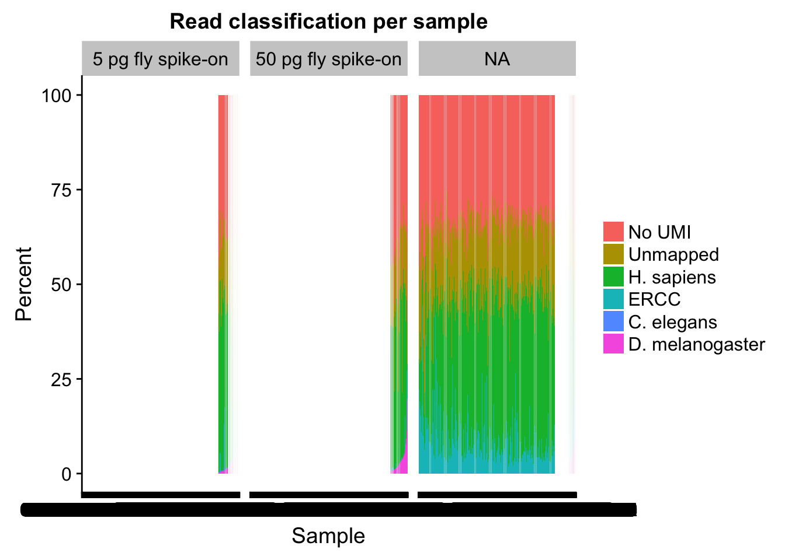
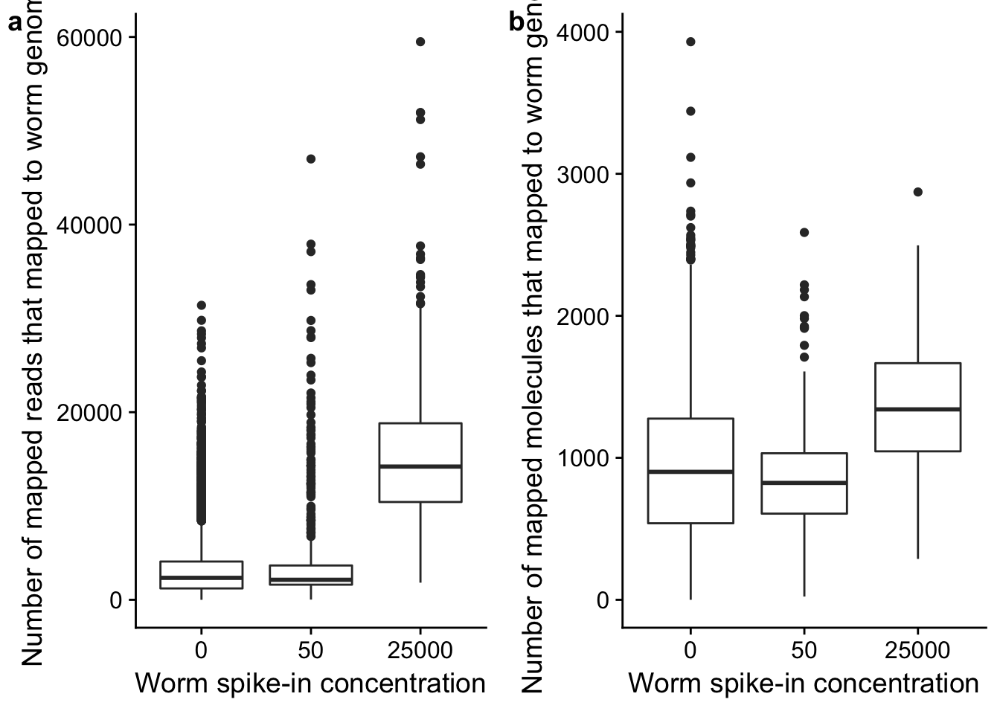
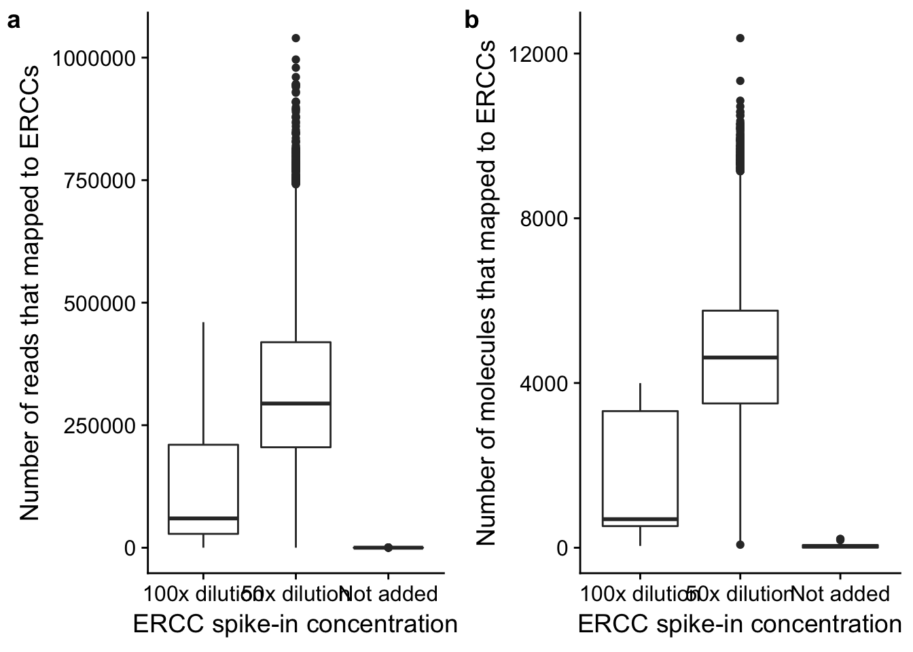

Analysis of totals counts
John Blischak
2017-08-14
Last updated: 2018-04-09
workflowr checks: (Click a bullet for more information)-
✔ R Markdown file: up-to-date
Great! Since the R Markdown file has been committed to the Git repository, you know the exact version of the code that produced these results.
-
✔ Environment: empty
Great job! The global environment was empty. Objects defined in the global environment can affect the analysis in your R Markdown file in unknown ways. For reproduciblity it’s best to always run the code in an empty environment.
-
✔ Seed:
set.seed(12345)The command
set.seed(12345)was run prior to running the code in the R Markdown file. Setting a seed ensures that any results that rely on randomness, e.g. subsampling or permutations, are reproducible. -
✔ Session information: recorded
Great job! Recording the operating system, R version, and package versions is critical for reproducibility.
-
Great! You are using Git for version control. Tracking code development and connecting the code version to the results is critical for reproducibility. The version displayed above was the version of the Git repository at the time these results were generated.✔ Repository version: da56ff1
Note that you need to be careful to ensure that all relevant files for the analysis have been committed to Git prior to generating the results (you can usewflow_publishorwflow_git_commit). workflowr only checks the R Markdown file, but you know if there are other scripts or data files that it depends on. Below is the status of the Git repository when the results were generated:
Note that any generated files, e.g. HTML, png, CSS, etc., are not included in this status report because it is ok for generated content to have uncommitted changes.Ignored files: Ignored: .Rhistory Ignored: .Rproj.user/ Untracked files: Untracked: udpate.R
Expand here to see past versions:
| File | Version | Author | Date | Message |
|---|---|---|---|---|
| Rmd | da56ff1 | John Blischak | 2018-04-09 | Migrate to workflowr 1.0 |
| html | 034330f | John Blischak | 2018-04-04 | Build site. |
| html | e019192 | John Blischak | 2018-03-20 | Build site. |
| html | bc61844 | John Blischak | 2018-03-09 | Build site. |
| html | 48f84ad | John Blischak | 2018-02-22 | Build site. |
| html | 8a7a2ec | Abhishek Sarkar | 2018-02-21 | Investigate diminishing returns by individual |
| html | 219bc84 | John Blischak | 2018-02-17 | Build site. |
| html | 4327975 | Abhishek Sarkar | 2018-02-11 | Investigate UMI count correction |
| html | 400f156 | John Blischak | 2018-01-29 | Build site. |
| Rmd | 39e8046 | Abhishek Sarkar | 2018-01-23 | Investigate UMI saturation vs read depth |
| html | 39e8046 | Abhishek Sarkar | 2018-01-23 | Investigate UMI saturation vs read depth |
| html | f439f21 | Abhishek Sarkar | 2018-01-18 | Implement zero-inflated model estimation and diagnostics |
| html | 389ee3b | Abhishek Sarkar | 2017-12-04 | Call mean/dispersion QTLs |
| html | 43a2bd2 | John Blischak | 2017-10-31 | Build site. |
| html | 9f24971 | John Blischak | 2017-10-26 | Build site. |
| html | 462fb11 | John Blischak | 2017-10-24 | Build site. |
| html | eb09f61 | John Blischak | 2017-09-14 | Build site. |
| Rmd | e455fa0 | John Blischak | 2017-09-14 | Update total counts analysis to use ExpressionSet objects. |
| html | 1470b04 | John Blischak | 2017-09-05 | Build site. |
| html | 9fd1619 | John Blischak | 2017-08-29 | Build site. |
| Rmd | 1268b1a | John Blischak | 2017-08-29 | Calculate the number of mapped reads per C1 chip. |
| html | da534e7 | John Blischak | 2017-08-24 | Build site. |
| html | 804993f | John Blischak | 2017-08-21 | Build site. |
| Rmd | f805249 | John Blischak | 2017-08-21 | Add plot of read classification percentage per sample. |
| html | ad42e09 | John Blischak | 2017-08-14 | Build site. |
| Rmd | e4d4030 | John Blischak | 2017-08-14 | Make plots of the absolute number of reads/molecules for the spikeins. |
| Rmd | 52d69b8 | John Blischak | 2017-08-14 | Analyze total counts from processing pipeline. |
This analysis explores the total counts of reads and molecules mapped to each source (human, fly, worm, and ERCC).
Setup
library("cowplot")
library("dplyr")
library("ggplot2")
library("tidyr")
theme_set(theme_cowplot())
source("../code/functions.R")
library("Biobase")Import data.
eset <- readRDS("../data/eset.rds")
anno <- pData(eset)Remove samples with bad cell number or TRA-1-60.
eset_qc <- eset[, anno$cell_number == 1 & anno$tra1.60]
anno_qc <- pData(eset_qc)Extract the columns relevant for this analysis.
totals <- anno_qc %>% select(experiment:well, raw:mol_hs)What percentage of reads are mapped to the genome?
totals_long <- totals %>%
gather(key = "type", value = "count", raw:mol_hs) %>%
filter(type %in% c("raw", "umi", "mapped", "molecules")) %>%
mutate(type = factor(type, levels = c("raw", "umi", "mapped", "molecules"),
labels = c("Raw reads", "Reads with UMI",
"Reads mapped\nto genome",
"Molecules mapped\nto genome")))
head(totals_long) experiment well type count
1 02192018 A01 Raw reads 1765393
2 02192018 A02 Raw reads 766260
3 02192018 A03 Raw reads 1946084
4 02192018 A04 Raw reads 2673053
5 02192018 A05 Raw reads 3325934
6 02192018 A06 Raw reads 2661534ggplot(totals_long, aes(x = type, y = count)) +
geom_boxplot() +
labs(x = "Classification", y = "Number of sequences",
title = "Processing of raw reads")
Expand here to see past versions of percent-mapped-1.png:
| Version | Author | Date |
|---|---|---|
| 034330f | John Blischak | 2018-04-04 |
| e019192 | John Blischak | 2018-03-20 |
| bc61844 | John Blischak | 2018-03-09 |
| 48f84ad | John Blischak | 2018-02-22 |
| 8a7a2ec | Abhishek Sarkar | 2018-02-21 |
| 219bc84 | John Blischak | 2018-02-17 |
| 4327975 | Abhishek Sarkar | 2018-02-11 |
| 39e8046 | Abhishek Sarkar | 2018-01-23 |
| f439f21 | Abhishek Sarkar | 2018-01-18 |
| 389ee3b | Abhishek Sarkar | 2017-12-04 |
| 43a2bd2 | John Blischak | 2017-10-31 |
| 9f24971 | John Blischak | 2017-10-26 |
| 462fb11 | John Blischak | 2017-10-24 |
| eb09f61 | John Blischak | 2017-09-14 |
| da534e7 | John Blischak | 2017-08-24 |
| 804993f | John Blischak | 2017-08-21 |
| ad42e09 | John Blischak | 2017-08-14 |
| Category | mean | sd | % of raw (mean) |
|---|---|---|---|
| Raw reads | 4.441220710^{6} | 2.278243810^{6} | 1.00 |
| Reads with UMI | 2.931474410^{6} | 1.552030210^{6} | 0.65 |
| Reads mapped to genome | 2.068562910^{6} | 1.141662910^{6} | 0.46 |
| Molecules mapped to genome | 1.095617810^{5} | 5.270835910^{4} | 0.03 |
How does the number of mapped reads vary by C1 chip?
mapped <- totals_long %>%
filter(type == "Reads mapped\nto genome")
ggplot(mapped, aes(x = experiment, y = count)) +
geom_boxplot() +
labs(x = "C1 chip", y = "Number of mapped reads",
title = "Mapped reads per C1 chip") +
theme(axis.text.x = element_text(angle = 45, hjust = 1, vjust = 1))
Expand here to see past versions of mapped-per-chip-1.png:
| Version | Author | Date |
|---|---|---|
| 034330f | John Blischak | 2018-04-04 |
| e019192 | John Blischak | 2018-03-20 |
| bc61844 | John Blischak | 2018-03-09 |
| 48f84ad | John Blischak | 2018-02-22 |
| 8a7a2ec | Abhishek Sarkar | 2018-02-21 |
| 219bc84 | John Blischak | 2018-02-17 |
| 4327975 | Abhishek Sarkar | 2018-02-11 |
| 39e8046 | Abhishek Sarkar | 2018-01-23 |
| f439f21 | Abhishek Sarkar | 2018-01-18 |
| 389ee3b | Abhishek Sarkar | 2017-12-04 |
| 43a2bd2 | John Blischak | 2017-10-31 |
| 9f24971 | John Blischak | 2017-10-26 |
| 462fb11 | John Blischak | 2017-10-24 |
| eb09f61 | John Blischak | 2017-09-14 |
| 9fd1619 | John Blischak | 2017-08-29 |
mapped_sum <- mapped %>%
group_by(experiment) %>%
summarize(total = sum(count))
ggplot(mapped_sum, aes(x = experiment, y = total)) +
geom_bar(stat= "identity") +
labs(x = "C1 chip", y = "Total number of mapped reads",
title = "Total mapped reads per C1 chip") +
theme(axis.text.x = element_text(angle = 45, hjust = 1, vjust = 1))
Expand here to see past versions of total-mapped-per-chip-1.png:
| Version | Author | Date |
|---|---|---|
| 034330f | John Blischak | 2018-04-04 |
| e019192 | John Blischak | 2018-03-20 |
| bc61844 | John Blischak | 2018-03-09 |
| 48f84ad | John Blischak | 2018-02-22 |
| 8a7a2ec | Abhishek Sarkar | 2018-02-21 |
| 219bc84 | John Blischak | 2018-02-17 |
| 4327975 | Abhishek Sarkar | 2018-02-11 |
| 39e8046 | Abhishek Sarkar | 2018-01-23 |
| f439f21 | Abhishek Sarkar | 2018-01-18 |
| 389ee3b | Abhishek Sarkar | 2017-12-04 |
| 43a2bd2 | John Blischak | 2017-10-31 |
| 9f24971 | John Blischak | 2017-10-26 |
| 462fb11 | John Blischak | 2017-10-24 |
| eb09f61 | John Blischak | 2017-09-14 |
| 9fd1619 | John Blischak | 2017-08-29 |
Sorted by total number of mapped reads (in millions).
mapped_sum %>%
arrange(total) %>%
mutate(total = total / 10^6) %>%
knitr::kable()| experiment | total |
|---|---|
| 02222018 | 78.28778 |
| 02272018 | 78.95743 |
| 02282018 | 82.56542 |
| 02242018 | 85.21371 |
| 02202018 | 85.65508 |
| 02192018 | 86.54926 |
| 02262018 | 91.65845 |
| 02212018 | 91.73489 |
| 12042017 | 110.17911 |
| 09272017 | 124.24309 |
| 10112017 | 125.28473 |
| 08162017 | 150.86872 |
| 08102017 | 151.02021 |
| 10092017 | 152.42567 |
| 10102017 | 153.27700 |
| 04132017 | 156.97627 |
| 04142017 | 157.35120 |
| 11282017 | 159.68109 |
| 04072017 | 159.80946 |
| 03312017 | 159.88979 |
| 08142017 | 164.23577 |
| 08152017 | 164.44799 |
| 10052017 | 164.67997 |
| 10042017 | 171.92751 |
| 10022017 | 172.99697 |
| 04052017 | 173.99471 |
| 12112017 | 174.39488 |
| 10062017 | 174.98989 |
| 11272017 | 177.30120 |
| 11152017 | 180.40158 |
| 11202017 | 180.62962 |
| 10172017 | 181.36524 |
| 12132017 | 182.20841 |
| 12062017 | 182.97073 |
| 12082017 | 184.43222 |
| 11162017 | 185.14167 |
| 09262017 | 185.53907 |
| 03172017 | 186.36864 |
| 03162017 | 186.48628 |
| 11302017 | 186.83788 |
| 11142017 | 187.32526 |
| 11172017 | 189.37489 |
| 11292017 | 191.71199 |
| 11022017 | 191.84742 |
| 08222017 | 192.28710 |
| 11102017 | 193.67440 |
| 12122017 | 195.11310 |
| 09252017 | 195.98869 |
| 04202017 | 196.00356 |
| 11032017 | 196.22684 |
| 08112017 | 197.41407 |
| 11212017 | 197.64972 |
| 10302017 | 198.08885 |
| 11092017 | 204.05467 |
| 08182017 | 204.45323 |
| 12142017 | 205.71842 |
| 12052017 | 209.09493 |
| 08282017 | 210.10865 |
| 11082017 | 211.73388 |
| 08212017 | 217.35114 |
| 08302017 | 219.94928 |
| 03302017 | 222.02280 |
| 11072017 | 230.40747 |
| 11132017 | 238.07216 |
| 08242017 | 239.15060 |
| 12072017 | 239.53636 |
| 10162017 | 241.19492 |
| 08312017 | 241.82901 |
| 11062017 | 244.14146 |
| 10132017 | 248.58268 |
| 03232017 | 248.62403 |
| 12012017 | 257.07111 |
| 08232017 | 258.91525 |
| 08292017 | 260.73275 |
| 10122017 | 269.94842 |
What is the conversion of reads to molecules?
convert_all <- ggplot(totals, aes(x = mapped, y = molecules)) +
geom_point() +
labs(x = "Number of reads mapped to any genome",
y = "Number of molecules mapped to any genome",
title = "Conversion of reads to molecules")
convert_hs <- ggplot(totals, aes(x = reads_hs, y = mol_hs)) +
geom_point() +
labs(x = "Number of reads mapped to human genome",
y = "Number of molecules mapped to human genome",
title = "Conversion of reads to molecules for human")
convert_dm <- ggplot(totals, aes(x = reads_dm, y = mol_dm)) +
geom_point() +
labs(x = "Number of reads mapped to fly genome",
y = "Number of molecules mapped to fly genome",
title = "Conversion of reads to molecules for fly")
convert_ce <- ggplot(totals, aes(x = reads_ce, y = mol_ce)) +
geom_point() +
labs(x = "Number of reads mapped to worm genome",
y = "Number of molecules mapped to worm genome",
title = "Conversion of reads to molecules for worm")
plot_grid(convert_all, convert_hs, convert_dm, convert_ce,
labels = letters[1:4])
Expand here to see past versions of reads-to-molecules-1.png:
| Version | Author | Date |
|---|---|---|
| 034330f | John Blischak | 2018-04-04 |
| e019192 | John Blischak | 2018-03-20 |
| bc61844 | John Blischak | 2018-03-09 |
| 48f84ad | John Blischak | 2018-02-22 |
| 8a7a2ec | Abhishek Sarkar | 2018-02-21 |
| 219bc84 | John Blischak | 2018-02-17 |
| 4327975 | Abhishek Sarkar | 2018-02-11 |
| 39e8046 | Abhishek Sarkar | 2018-01-23 |
| f439f21 | Abhishek Sarkar | 2018-01-18 |
| 389ee3b | Abhishek Sarkar | 2017-12-04 |
| 43a2bd2 | John Blischak | 2017-10-31 |
| 9f24971 | John Blischak | 2017-10-26 |
| 462fb11 | John Blischak | 2017-10-24 |
| eb09f61 | John Blischak | 2017-09-14 |
| da534e7 | John Blischak | 2017-08-24 |
| 804993f | John Blischak | 2017-08-21 |
| ad42e09 | John Blischak | 2017-08-14 |
Drosophila spike-in
p_reads_dm <- ggplot(anno_qc, aes(x = as.factor(fly), y = reads_dm / mapped * 100)) +
geom_boxplot() +
labs(x = "Fly spike-in concentration",
y = "Percentage of mapped reads that mapped to fly genome")
p_mol_dm <- ggplot(anno_qc, aes(x = as.factor(fly), y = mol_dm / molecules * 100)) +
geom_boxplot() +
labs(x = "Fly spike-in concentration",
y = "Percentage of mapped molecules that mapped to fly genome")
plot_grid(p_reads_dm, p_mol_dm, labels = letters[1:2])
Expand here to see past versions of totals-fly-perc-1.png:
| Version | Author | Date |
|---|---|---|
| 034330f | John Blischak | 2018-04-04 |
| e019192 | John Blischak | 2018-03-20 |
| bc61844 | John Blischak | 2018-03-09 |
| 48f84ad | John Blischak | 2018-02-22 |
| 8a7a2ec | Abhishek Sarkar | 2018-02-21 |
| 219bc84 | John Blischak | 2018-02-17 |
| 4327975 | Abhishek Sarkar | 2018-02-11 |
| 39e8046 | Abhishek Sarkar | 2018-01-23 |
| f439f21 | Abhishek Sarkar | 2018-01-18 |
| 389ee3b | Abhishek Sarkar | 2017-12-04 |
| 43a2bd2 | John Blischak | 2017-10-31 |
| 9f24971 | John Blischak | 2017-10-26 |
| 462fb11 | John Blischak | 2017-10-24 |
| eb09f61 | John Blischak | 2017-09-14 |
| da534e7 | John Blischak | 2017-08-24 |
| 804993f | John Blischak | 2017-08-21 |
| ad42e09 | John Blischak | 2017-08-14 |
p_reads_dm_counts <- ggplot(anno_qc, aes(x = as.factor(fly), y = reads_dm)) +
geom_boxplot() +
labs(x = "Fly spike-in concentration",
y = "Number of reads that mapped to fly genome")
p_mol_dm_counts <- ggplot(anno_qc, aes(x = as.factor(fly), y = mol_dm)) +
geom_boxplot() +
labs(x = "Fly spike-in concentration",
y = "Number of molecules that mapped to fly genome")
plot_grid(p_reads_dm_counts, p_mol_dm_counts, labels = letters[1:2])
Expand here to see past versions of totals-fly-counts-1.png:
| Version | Author | Date |
|---|---|---|
| 034330f | John Blischak | 2018-04-04 |
| e019192 | John Blischak | 2018-03-20 |
| bc61844 | John Blischak | 2018-03-09 |
| 48f84ad | John Blischak | 2018-02-22 |
| 8a7a2ec | Abhishek Sarkar | 2018-02-21 |
| 219bc84 | John Blischak | 2018-02-17 |
| 4327975 | Abhishek Sarkar | 2018-02-11 |
| 39e8046 | Abhishek Sarkar | 2018-01-23 |
| f439f21 | Abhishek Sarkar | 2018-01-18 |
| 389ee3b | Abhishek Sarkar | 2017-12-04 |
| 43a2bd2 | John Blischak | 2017-10-31 |
| 9f24971 | John Blischak | 2017-10-26 |
| 462fb11 | John Blischak | 2017-10-24 |
| eb09f61 | John Blischak | 2017-09-14 |
| da534e7 | John Blischak | 2017-08-24 |
| 804993f | John Blischak | 2017-08-21 |
| ad42e09 | John Blischak | 2017-08-14 |
totals_percent <- anno_qc %>%
mutate(sample = paste(experiment, well, sep = "-"),
sample = factor(sample, levels = sample[order(reads_dm / raw)])) %>%
arrange(reads_dm / raw) %>%
group_by(experiment, sample, fly, worm, ERCC) %>%
summarize(p_reads_ce = reads_ce / raw * 100,
p_reads_dm = reads_dm / raw * 100,
p_reads_ercc = reads_ercc / raw * 100,
p_reads_hs = reads_hs / raw * 100,
p_unmapped = unmapped / raw * 100,
p_no_umi = (raw - unmapped - mapped) / raw * 100) %>%
gather(key = "type", value = "percent", p_reads_ce:p_no_umi) %>%
ungroup() %>%
mutate(type = factor(type, levels = c("p_no_umi", "p_unmapped", "p_reads_hs",
"p_reads_ercc", "p_reads_ce", "p_reads_dm"),
labels = c("No UMI", "Unmapped", "H. sapiens", "ERCC",
"C. elegans", "D. melanogaster")),
fly = factor(fly, levels = c(5000, 50000), labels = c("5 pg fly spike-on",
"50 pg fly spike-on")))
ggplot(totals_percent, aes(x = sample, y = percent, fill = type)) +
geom_col() +
facet_wrap(~fly) +
labs(x = "Sample", y = "Percent", title = "Read classification per sample") +
theme(legend.title = element_blank())
Expand here to see past versions of read-classification-per-sample-1.png:
| Version | Author | Date |
|---|---|---|
| 034330f | John Blischak | 2018-04-04 |
| e019192 | John Blischak | 2018-03-20 |
| bc61844 | John Blischak | 2018-03-09 |
| 48f84ad | John Blischak | 2018-02-22 |
| 8a7a2ec | Abhishek Sarkar | 2018-02-21 |
| 219bc84 | John Blischak | 2018-02-17 |
| 4327975 | Abhishek Sarkar | 2018-02-11 |
| 39e8046 | Abhishek Sarkar | 2018-01-23 |
| f439f21 | Abhishek Sarkar | 2018-01-18 |
| 389ee3b | Abhishek Sarkar | 2017-12-04 |
| 43a2bd2 | John Blischak | 2017-10-31 |
| 9f24971 | John Blischak | 2017-10-26 |
| 462fb11 | John Blischak | 2017-10-24 |
| eb09f61 | John Blischak | 2017-09-14 |
| da534e7 | John Blischak | 2017-08-24 |
| 804993f | John Blischak | 2017-08-21 |
C. elegans spike-in
p_reads_ce <- ggplot(anno_qc, aes(x = as.factor(worm), y = reads_ce / mapped * 100)) +
geom_boxplot() +
labs(x = "Worm spike-in concentration",
y = "Percentage of mapped reads that mapped to worm genome")
p_mol_ce <- ggplot(anno_qc, aes(x = as.factor(worm), y = mol_ce / molecules * 100)) +
geom_boxplot() +
labs(x = "Worm spike-in concentration",
y = "Percentage of mapped molecules that mapped to worm genome")
plot_grid(p_reads_ce, p_mol_ce, labels = letters[1:2])
Expand here to see past versions of totals-worm-perc-1.png:
| Version | Author | Date |
|---|---|---|
| 034330f | John Blischak | 2018-04-04 |
| e019192 | John Blischak | 2018-03-20 |
| bc61844 | John Blischak | 2018-03-09 |
| 48f84ad | John Blischak | 2018-02-22 |
| 8a7a2ec | Abhishek Sarkar | 2018-02-21 |
| 219bc84 | John Blischak | 2018-02-17 |
| 4327975 | Abhishek Sarkar | 2018-02-11 |
| 39e8046 | Abhishek Sarkar | 2018-01-23 |
| f439f21 | Abhishek Sarkar | 2018-01-18 |
| 389ee3b | Abhishek Sarkar | 2017-12-04 |
| 43a2bd2 | John Blischak | 2017-10-31 |
| 9f24971 | John Blischak | 2017-10-26 |
| 462fb11 | John Blischak | 2017-10-24 |
| eb09f61 | John Blischak | 2017-09-14 |
| da534e7 | John Blischak | 2017-08-24 |
| 804993f | John Blischak | 2017-08-21 |
| ad42e09 | John Blischak | 2017-08-14 |
p_reads_ce_counts <- ggplot(anno_qc, aes(x = as.factor(worm), y = reads_ce)) +
geom_boxplot() +
labs(x = "Worm spike-in concentration",
y = "Number of mapped reads that mapped to worm genome")
p_mol_ce_counts <- ggplot(anno_qc, aes(x = as.factor(worm), y = mol_ce)) +
geom_boxplot() +
labs(x = "Worm spike-in concentration",
y = "Number of mapped molecules that mapped to worm genome")
plot_grid(p_reads_ce_counts, p_mol_ce_counts, labels = letters[1:2])
Expand here to see past versions of totals-worm-counts-1.png:
| Version | Author | Date |
|---|---|---|
| 034330f | John Blischak | 2018-04-04 |
| e019192 | John Blischak | 2018-03-20 |
| bc61844 | John Blischak | 2018-03-09 |
| 48f84ad | John Blischak | 2018-02-22 |
| 8a7a2ec | Abhishek Sarkar | 2018-02-21 |
| 219bc84 | John Blischak | 2018-02-17 |
| 4327975 | Abhishek Sarkar | 2018-02-11 |
| 39e8046 | Abhishek Sarkar | 2018-01-23 |
| f439f21 | Abhishek Sarkar | 2018-01-18 |
| 389ee3b | Abhishek Sarkar | 2017-12-04 |
| 43a2bd2 | John Blischak | 2017-10-31 |
| 9f24971 | John Blischak | 2017-10-26 |
| 462fb11 | John Blischak | 2017-10-24 |
| eb09f61 | John Blischak | 2017-09-14 |
| da534e7 | John Blischak | 2017-08-24 |
| 804993f | John Blischak | 2017-08-21 |
| ad42e09 | John Blischak | 2017-08-14 |
ERCC spike-in
p_reads_ercc <- ggplot(anno_qc, aes(x = as.factor(ERCC), y = reads_ercc / mapped * 100)) +
geom_boxplot() +
labs(x = "ERCC spike-in concentration",
y = "Percentage of mapped reads that mapped to ERCCs")
p_mol_ercc <- ggplot(anno_qc, aes(x = as.factor(ERCC), y = mol_ercc / molecules * 100)) +
geom_boxplot() +
labs(x = "ERCC spike-in concentration",
y = "Percentage of mapped molecules that mapped to ERCCs")
plot_grid(p_reads_ercc, p_mol_ercc, labels = letters[1:2])
Expand here to see past versions of totals-ercc-perc-1.png:
| Version | Author | Date |
|---|---|---|
| 034330f | John Blischak | 2018-04-04 |
| e019192 | John Blischak | 2018-03-20 |
| bc61844 | John Blischak | 2018-03-09 |
| 48f84ad | John Blischak | 2018-02-22 |
| 8a7a2ec | Abhishek Sarkar | 2018-02-21 |
| 219bc84 | John Blischak | 2018-02-17 |
| 4327975 | Abhishek Sarkar | 2018-02-11 |
| 39e8046 | Abhishek Sarkar | 2018-01-23 |
| f439f21 | Abhishek Sarkar | 2018-01-18 |
| 389ee3b | Abhishek Sarkar | 2017-12-04 |
| 43a2bd2 | John Blischak | 2017-10-31 |
| 9f24971 | John Blischak | 2017-10-26 |
| 462fb11 | John Blischak | 2017-10-24 |
| eb09f61 | John Blischak | 2017-09-14 |
| da534e7 | John Blischak | 2017-08-24 |
| 804993f | John Blischak | 2017-08-21 |
| ad42e09 | John Blischak | 2017-08-14 |
p_reads_ercc_counts <- ggplot(anno_qc, aes(x = as.factor(ERCC), y = reads_ercc)) +
geom_boxplot() +
labs(x = "ERCC spike-in concentration",
y = "Number of reads that mapped to ERCCs")
p_mol_ercc_counts <- ggplot(anno_qc, aes(x = as.factor(ERCC), y = mol_ercc)) +
geom_boxplot() +
labs(x = "ERCC spike-in concentration",
y = "Number of molecules that mapped to ERCCs")
plot_grid(p_reads_ercc_counts, p_mol_ercc_counts, labels = letters[1:2])
Expand here to see past versions of totals-ercc-counts-1.png:
| Version | Author | Date |
|---|---|---|
| 034330f | John Blischak | 2018-04-04 |
| e019192 | John Blischak | 2018-03-20 |
| bc61844 | John Blischak | 2018-03-09 |
| 48f84ad | John Blischak | 2018-02-22 |
| 8a7a2ec | Abhishek Sarkar | 2018-02-21 |
| 219bc84 | John Blischak | 2018-02-17 |
| 4327975 | Abhishek Sarkar | 2018-02-11 |
| 39e8046 | Abhishek Sarkar | 2018-01-23 |
| f439f21 | Abhishek Sarkar | 2018-01-18 |
| 389ee3b | Abhishek Sarkar | 2017-12-04 |
| 43a2bd2 | John Blischak | 2017-10-31 |
| 9f24971 | John Blischak | 2017-10-26 |
| 462fb11 | John Blischak | 2017-10-24 |
| eb09f61 | John Blischak | 2017-09-14 |
| da534e7 | John Blischak | 2017-08-24 |
| 804993f | John Blischak | 2017-08-21 |
| ad42e09 | John Blischak | 2017-08-14 |
Session information
sessionInfo()R version 3.3.2 (2016-10-31)
Platform: x86_64-apple-darwin13.4.0 (64-bit)
Running under: OS X Yosemite 10.10.5
locale:
[1] en_US.UTF-8/en_US.UTF-8/en_US.UTF-8/C/en_US.UTF-8/en_US.UTF-8
attached base packages:
[1] parallel stats graphics grDevices utils datasets methods
[8] base
other attached packages:
[1] bindrcpp_0.2 Biobase_2.34.0 BiocGenerics_0.20.0
[4] tidyr_0.7.2 dplyr_0.7.4 cowplot_0.9.2
[7] ggplot2_2.2.1
loaded via a namespace (and not attached):
[1] Rcpp_0.12.14 highr_0.6 pillar_1.2.1
[4] git2r_0.21.0 plyr_1.8.4 workflowr_0.11.0.9000
[7] bindr_0.1 R.methodsS3_1.7.1 R.utils_2.6.0
[10] tools_3.3.2 digest_0.6.13 evaluate_0.10.1
[13] tibble_1.4.2 gtable_0.2.0 pkgconfig_2.0.1
[16] rlang_0.2.0 yaml_2.1.16 stringr_1.2.0
[19] knitr_1.18 tidyselect_0.2.3 rprojroot_1.3-2
[22] grid_3.3.2 glue_1.2.0 R6_2.2.2
[25] rmarkdown_1.9 purrr_0.2.4 magrittr_1.5
[28] whisker_0.3-2 backports_1.1.2 scales_0.4.1
[31] htmltools_0.3.6 assertthat_0.2.0 colorspace_1.3-2
[34] labeling_0.3 stringi_1.1.6 lazyeval_0.2.1
[37] munsell_0.4.3 R.oo_1.21.0
This reproducible R Markdown analysis was created with workflowr 0.11.0.9000